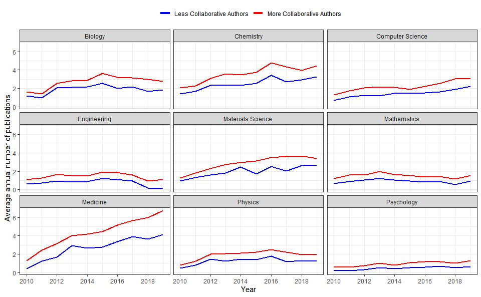

Postoji statistički značajna razlika u broju objavljenih naučnih radova između istraživača na srpskim državnim univerzitetima i srpskih naučnim migranata. U proseku, migrant će objaviti 2,3 rada više godišnje od svog srpskog kolege. Takođe, utvrdili smo statistički značajan porast u broju objavljenih radva domaćih naučnika koji sarađuju sa stranim naučnicima. U proseku, naučnici koji više sarađuju godišnje objave 1,9 radova više nego naučnici koji manje sarađuju. Da bismo to izračunali, rangirali smo sve srpske naučnike prema procentu radova u koautorstvu sa stranim autorima. Naučnici u gornjih 50% spiska „više sarađuju“, dok ostali „manje sarađuju“. Rezultati su predstavljeni na donjoj slici.
